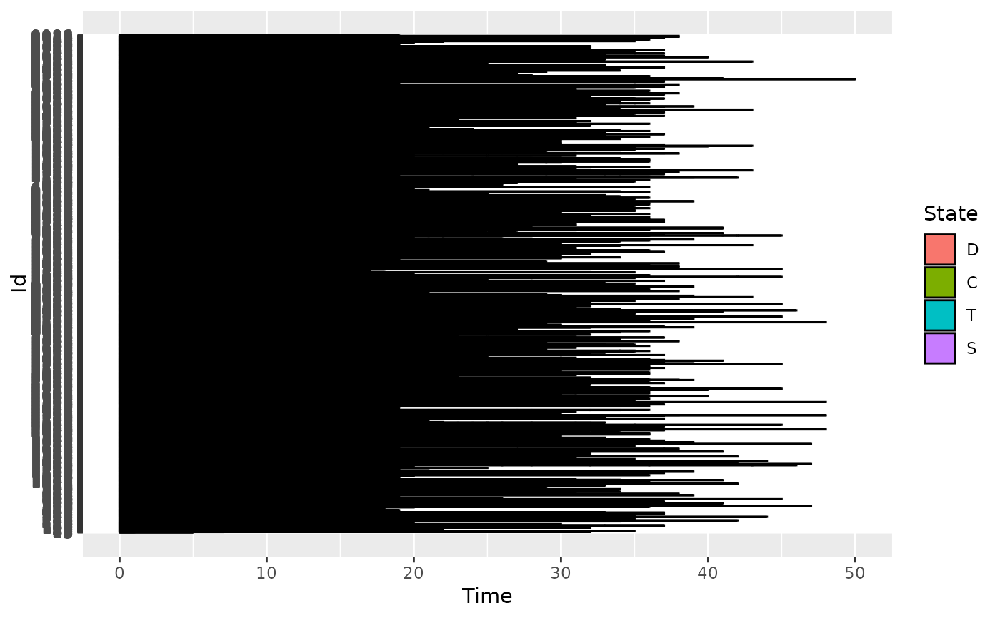

Care trajectories of patients diagnosed with a serious and chronic condition
data(care)Format
A data.frame containing three columns:
id id of individuals (2929 different ids)
time number of months since the diagnosis
state new state.
Source
https://larmarange.github.io/analyse-R/data/care_trajectories.RData https://larmarange.github.io/analyse-R/trajectoires-de-soins.html
Details
In this study, patients were followed from the time they were diagnosed with a serious and chronic condition and their care trajectories were tracked monthly from the time of diagnosis. The status variable contains the care status of each individual for each month of follow-up. Trajectories have different lengths.
The four states are:
D: diagnosed, but not in care
C: in care, but not on treatment
T: on treatment, but infection not suppressed
S: on treatment and suppressed infection
Examples
data(care)
head(care)
#> id time state
#> 1 3 0 D
#> 2 3 5 D
#> 3 9 0 D
#> 4 9 1 D
#> 5 13 0 D
#> 6 13 7 D
# Individuals has not the same length. In order to compute the encoding,
# we keep individuals with at least 18 months of history and work
# with the 18 first months.
duration <- compute_duration(care)
idToKeep <- as.numeric(names(duration[duration >= 18]))
care2 <- cut_data(care[care$id %in% idToKeep, ], 18)
head(care2)
#> id time state
#> 1 15 0 D
#> 2 15 4 T
#> 3 15 7 C
#> 4 15 8 D
#> 5 15 15 C
#> 6 15 18 C
# \donttest{
# It is recommended to increase the number of cores to reduce computation time
set.seed(42)
basis <- create.bspline.basis(c(0, 18), nbasis = 10, norder = 4)
fmca <- compute_optimal_encoding(care2, basis, nCores = 2)
#> ######### Compute encoding #########
#> Number of individuals: 1317
#> Number of states: 4
#> Basis type: bspline
#> Number of basis functions: 10
#> Number of cores: 1
#> ---- Compute V matrix:
#>
| | 0 % ~calculating
|= | 1 % ~01m 16s
|== | 2 % ~01m 13s
|== | 3 % ~01m 12s
|=== | 4 % ~01m 12s
|=== | 5 % ~01m 11s
|==== | 6 % ~01m 10s
|==== | 7 % ~01m 10s
|===== | 8 % ~01m 09s
|===== | 9 % ~01m 08s
|====== | 11% ~01m 08s
|====== | 12% ~01m 07s
|======= | 13% ~01m 06s
|======= | 14% ~01m 05s
|======== | 15% ~01m 04s
|======== | 16% ~01m 03s
|========= | 17% ~01m 02s
|========= | 18% ~01m 02s
|========== | 19% ~01m 01s
|========== | 20% ~60s
|=========== | 21% ~59s
|============ | 22% ~58s
|============ | 23% ~58s
|============= | 24% ~57s
|============= | 25% ~56s
|============== | 26% ~55s
|============== | 27% ~55s
|=============== | 28% ~54s
|=============== | 29% ~53s
|================ | 31% ~52s
|================ | 32% ~51s
|================= | 33% ~50s
|================= | 34% ~50s
|================== | 35% ~49s
|================== | 36% ~48s
|=================== | 37% ~47s
|=================== | 38% ~46s
|==================== | 39% ~46s
|==================== | 40% ~45s
|===================== | 41% ~44s
|====================== | 42% ~43s
|====================== | 43% ~42s
|======================= | 44% ~42s
|======================= | 45% ~41s
|======================== | 46% ~40s
|======================== | 47% ~39s
|========================= | 48% ~38s
|========================= | 49% ~38s
|========================== | 51% ~37s
|========================== | 52% ~36s
|=========================== | 53% ~35s
|=========================== | 54% ~34s
|============================ | 55% ~34s
|============================ | 56% ~33s
|============================= | 57% ~32s
|============================= | 58% ~31s
|============================== | 59% ~30s
|============================== | 60% ~30s
|=============================== | 61% ~29s
|================================ | 62% ~28s
|================================ | 63% ~27s
|================================= | 64% ~27s
|================================= | 65% ~26s
|================================== | 66% ~25s
|================================== | 67% ~24s
|=================================== | 68% ~23s
|=================================== | 69% ~23s
|==================================== | 71% ~22s
|==================================== | 72% ~21s
|===================================== | 73% ~20s
|===================================== | 74% ~19s
|====================================== | 75% ~19s
|====================================== | 76% ~18s
|======================================= | 77% ~17s
|======================================= | 78% ~16s
|======================================== | 79% ~15s
|======================================== | 80% ~15s
|========================================= | 81% ~14s
|========================================== | 82% ~13s
|========================================== | 83% ~12s
|=========================================== | 84% ~12s
|=========================================== | 85% ~11s
|============================================ | 86% ~10s
|============================================ | 87% ~09s
|============================================= | 88% ~08s
|============================================= | 89% ~08s
|============================================== | 91% ~07s
|============================================== | 92% ~06s
|=============================================== | 93% ~05s
|=============================================== | 94% ~05s
|================================================ | 95% ~04s
|================================================ | 96% ~03s
|================================================= | 97% ~02s
|================================================= | 98% ~02s
|==================================================| 99% ~01s
|==================================================| 100% elapsed=01m 13s
#>
#> DONE in 72.55s
#> ---- Compute U matrix:
#>
| | 0 % ~calculating
|= | 1 % ~08m 04s
|== | 2 % ~07m 44s
|== | 3 % ~07m 42s
|=== | 4 % ~07m 44s
|=== | 5 % ~07m 42s
|==== | 6 % ~07m 42s
|==== | 7 % ~07m 38s
|===== | 8 % ~07m 31s
|===== | 9 % ~07m 25s
|====== | 11% ~07m 17s
|====== | 12% ~07m 12s
|======= | 13% ~07m 09s
|======= | 14% ~07m 03s
|======== | 15% ~06m 59s
|======== | 16% ~06m 53s
|========= | 17% ~06m 48s
|========= | 18% ~06m 42s
|========== | 19% ~06m 38s
|========== | 20% ~06m 33s
|=========== | 21% ~06m 27s
|============ | 22% ~06m 23s
|============ | 23% ~06m 17s
|============= | 24% ~06m 12s
|============= | 25% ~06m 07s
|============== | 26% ~06m 01s
|============== | 27% ~05m 57s
|=============== | 28% ~05m 51s
|=============== | 29% ~05m 46s
|================ | 31% ~05m 40s
|================ | 32% ~05m 35s
|================= | 33% ~05m 31s
|================= | 34% ~05m 25s
|================== | 35% ~05m 20s
|================== | 36% ~05m 16s
|=================== | 37% ~05m 10s
|=================== | 38% ~05m 05s
|==================== | 39% ~04m 60s
|==================== | 40% ~04m 55s
|===================== | 41% ~04m 50s
|====================== | 42% ~04m 45s
|====================== | 43% ~04m 39s
|======================= | 44% ~04m 34s
|======================= | 45% ~04m 29s
|======================== | 46% ~04m 23s
|======================== | 47% ~04m 18s
|========================= | 48% ~04m 13s
|========================= | 49% ~04m 08s
|========================== | 51% ~04m 02s
|========================== | 52% ~03m 57s
|=========================== | 53% ~03m 51s
|=========================== | 54% ~03m 47s
|============================ | 55% ~03m 41s
|============================ | 56% ~03m 36s
|============================= | 57% ~03m 31s
|============================= | 58% ~03m 26s
|============================== | 59% ~03m 21s
|============================== | 60% ~03m 16s
|=============================== | 61% ~03m 11s
|================================ | 62% ~03m 06s
|================================ | 63% ~03m 00s
|================================= | 64% ~02m 55s
|================================= | 65% ~02m 50s
|================================== | 66% ~02m 45s
|================================== | 67% ~02m 39s
|=================================== | 68% ~02m 34s
|=================================== | 69% ~02m 29s
|==================================== | 71% ~02m 24s
|==================================== | 72% ~02m 18s
|===================================== | 73% ~02m 13s
|===================================== | 74% ~02m 08s
|====================================== | 75% ~02m 03s
|====================================== | 76% ~01m 58s
|======================================= | 77% ~01m 53s
|======================================= | 78% ~01m 48s
|======================================== | 79% ~01m 43s
|======================================== | 80% ~01m 37s
|========================================= | 81% ~01m 32s
|========================================== | 82% ~01m 27s
|========================================== | 83% ~01m 22s
|=========================================== | 84% ~01m 17s
|=========================================== | 85% ~01m 12s
|============================================ | 86% ~01m 07s
|============================================ | 87% ~01m 01s
|============================================= | 88% ~56s
|============================================= | 89% ~51s
|============================================== | 91% ~46s
|============================================== | 92% ~41s
|=============================================== | 93% ~36s
|=============================================== | 94% ~31s
|================================================ | 95% ~26s
|================================================ | 96% ~20s
|================================================= | 97% ~15s
|================================================= | 98% ~10s
|==================================================| 99% ~05s
|==================================================| 100% elapsed=08m 01s
#>
#> DONE in 480.84s
#> ---- Compute encoding:
#> DONE in 0s
#> ---- Compute Bootstrap Encoding:
#> **************************************************
#> DONE in 0.46s
#> Run Time: 554.3s
plotEigenvalues(fmca, cumulative = TRUE, normalize = TRUE)

plot(fmca)
#> Warning: Removed 8 row(s) containing missing values (geom_path).
 plot(fmca, addCI = TRUE)
#> Warning: Removed 8 row(s) containing missing values (geom_path).
plot(fmca, addCI = TRUE)
#> Warning: Removed 8 row(s) containing missing values (geom_path).
 plotComponent(fmca, addNames = FALSE)
# }
plotComponent(fmca, addNames = FALSE)
# }